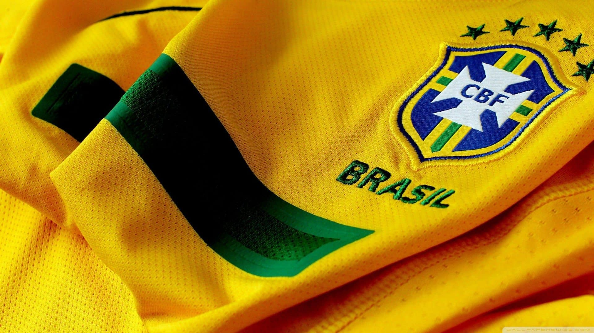

É a seleção mais bem-sucedida da história do futebol mundial, sendo a recordista em conquistas em Copas do Mundo, com cinco títulos invictos (1958, 1962, 1970, 1994 e 2002) e quatro títulos da Copa das Confederações FIFA (1997, 2005, 2009 e 2013).
Oficialmente, a Seleção Brasileira de futebol surgiu em 1914, na mesma época em que também surgia a Confederação Brasileira de Futebol (CBF). Desde então, é uma das seleções de maior destaque internacional, sendo a única a acumular cinco campeonatos mundias e participação em todas as Copas organizadas.
A primeira participação do Brasil na Copa do Mundo aconteceu na primeira edição do evento, no Uruguai, em 1930. A Seleção Brasileira, no entanto, não conseguiu passar da primeira fase e terminou na sexta colocação. Na época, haviam 16 equipes disputando o torneio.